줄기세포란?
줄기세포는 여러 신체조직으로 분화할 수 있는 미분화세포로 여러 기능을 통해 우리 몸에서 손상된 세포나 조직을 재생하고 회복시키는 역할을 합니다.
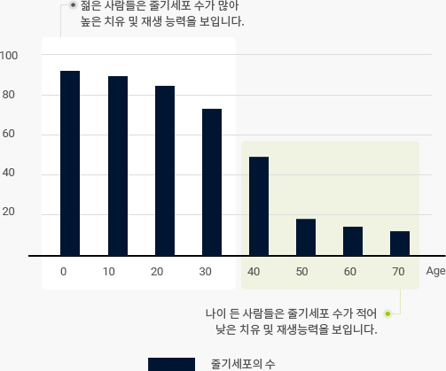
하지만 20대 중반 이후 우리 몸의 줄기세포 수와 활성도는 급격하게 감소하며
그에 따라 치유 및 재생 능력이 떨어지면서 빠른 속도로 노화가 진행되게 됩니다.
건강한 줄기세포를 지속적으로 우리 몸 안에 제공해준다면,
면역시스템을 회복해주며 노화를 늦출 수 있습니다.
줄기세포의 종류
-
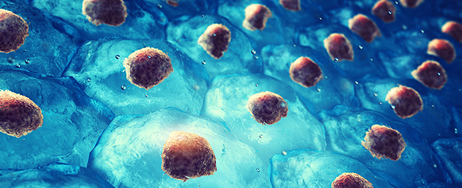
- 배아줄기세포
-
수정된 배아 초기 단계에서 유래
모든 조직의 세포로 분화가능한 전능 세포
살아있는 생명체 파괴로 취급될 수 있는 문제윤리적 문제를 갖고 있음
조절 문제로 인한 부작용 발생으로 의료 목적으로 사용 금지되어 있는 상태
-
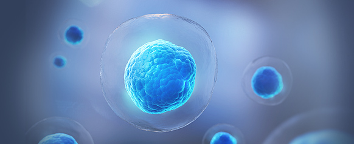
- 성체줄기세포
-
분화가 가능한 미분화 세포
다양한 조직에서 채취가 가능하여 채취가 용이함
자가세포를 활용하여 면역거부반응 없음
암 조직 등을 형성할 위험성이 없음
중간엽 줄기세포 / 조혈모 줄기세포
성체줄기세포
-
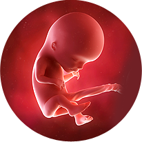
- 제대혈
-
혈액관련 질병에 적용
출생 시만 채집 가능
-
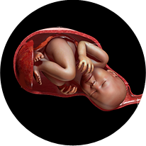
- 태반
-
채취가 쉬우나 제한적
출생 시만 채집 가능
-
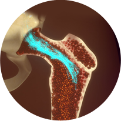
- 골수
-
채취가 어려움
소량만 채취가능
배양이 어려움
연구 기간이 가장 오래됨
-
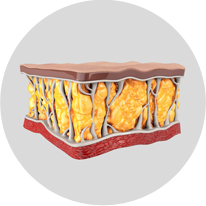
- 지방
-
채취가 쉬움
부작용이 전혀 없음
배양이 쉬움
적용범위가 넓은 연구재료
줄기세포의 특성
01분화
줄기세포는 여러 신체조직으로 분화할 수 있는 미분화세포로 여러 기능을 통해
우리 몸에서 손상된 세포나 조직을 재생하고 회복시키는 역할을 합니다.
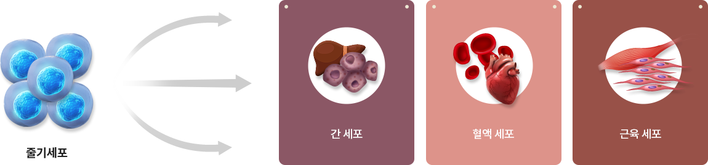
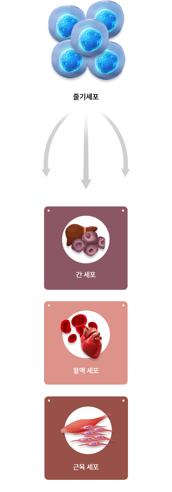
02줄기세포의 호밍효과
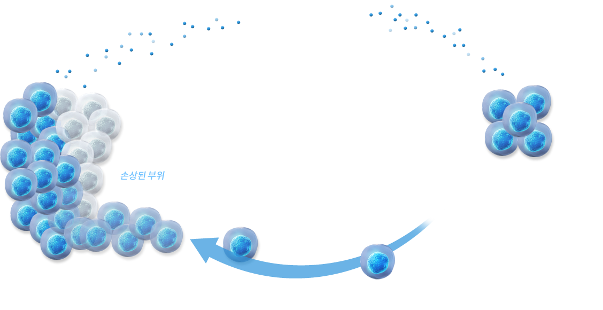
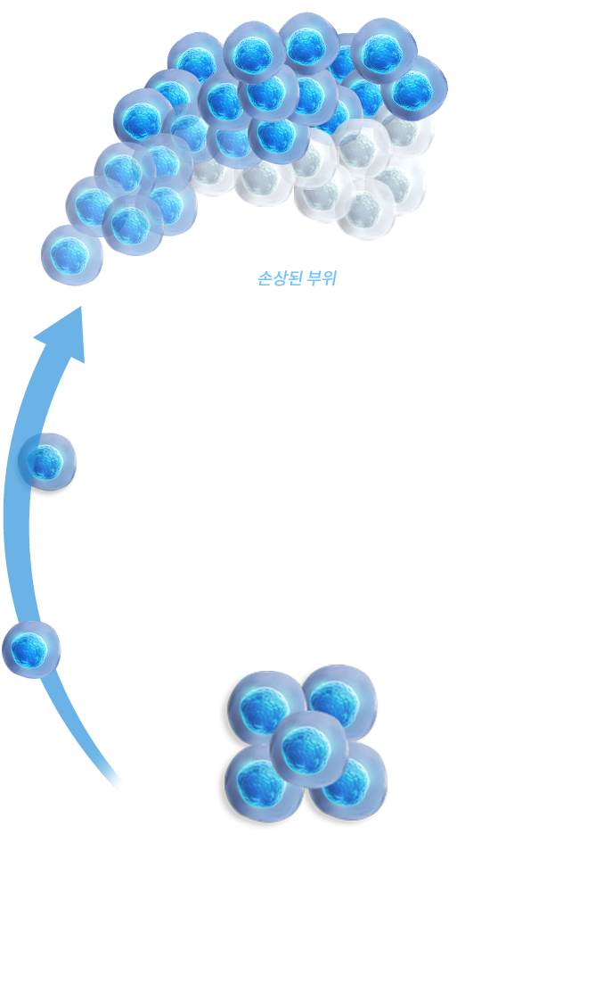
03파라크라인 효과
줄기세포는 증식되면서 면역조절과 세포활성화를 돕는 여러 유형의 성장 인자를 분비합니다.
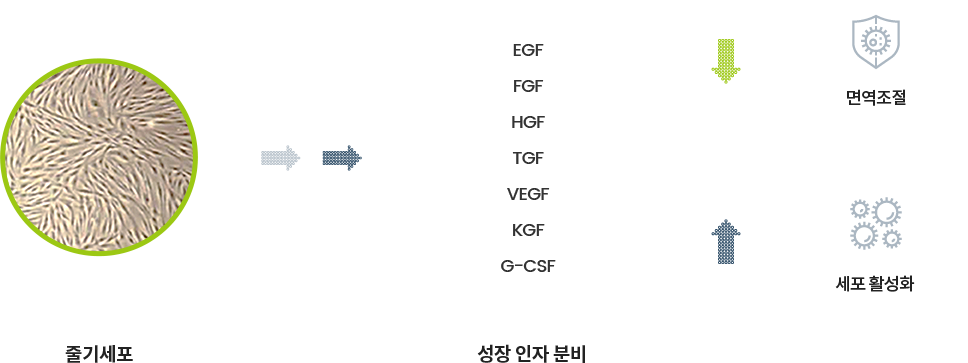
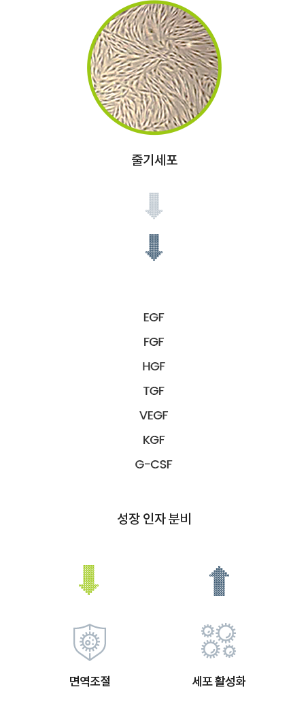
줄기세포의 기능
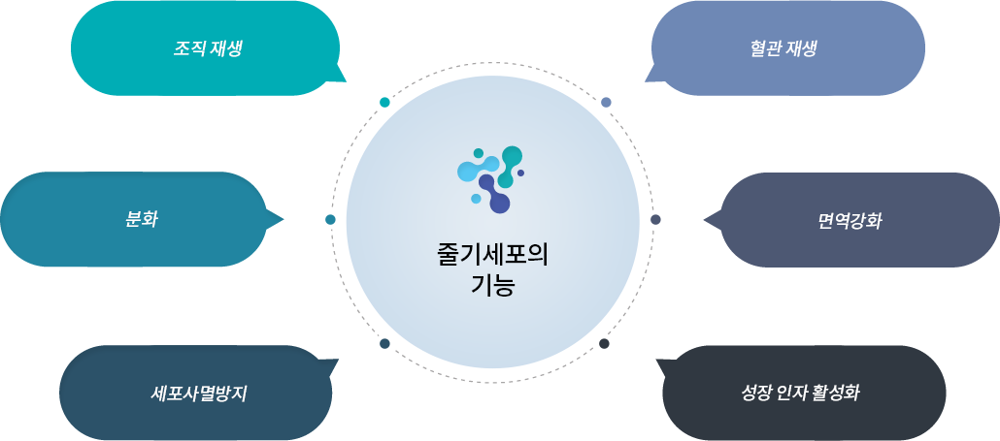
줄기세포의
사용 가능 분야
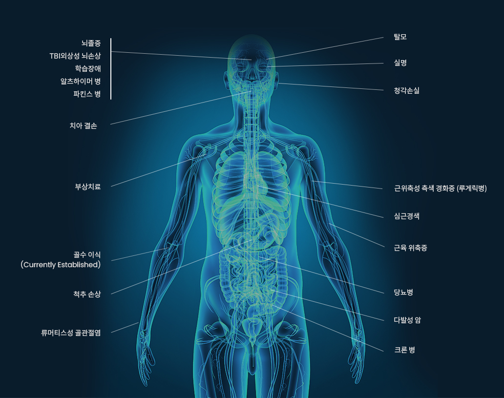
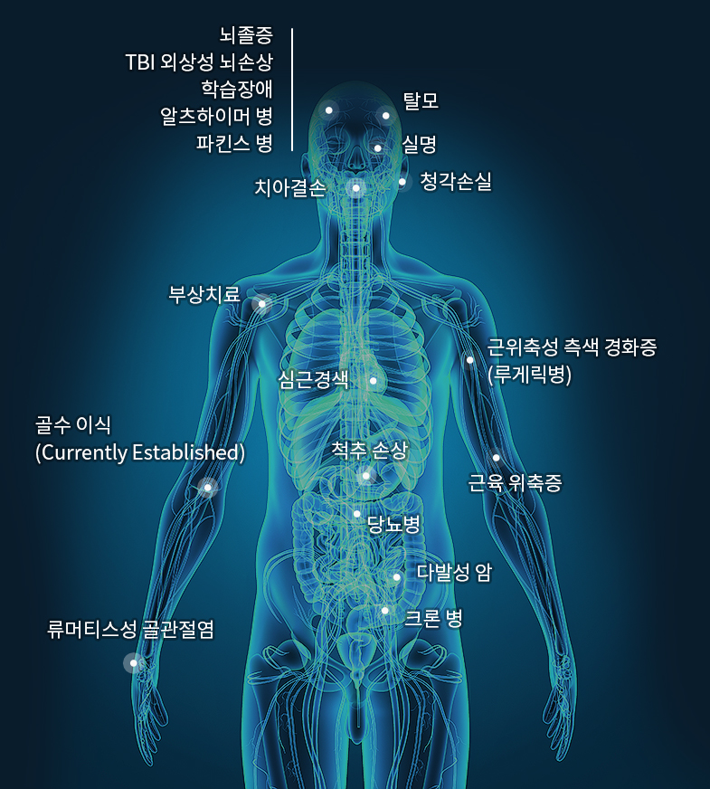